BEIJING CITY INK / RENDER STUDY 02 / 2026.10.30
让城市的细节更清楚。
同一份国贸 OSM、同一组机位和画幅，比较 v0.2 → v0.3。重点打磨远景窗格、漫画明暗、树冠和道路交口。
更干净的远景
按像素大小过滤窗格；光照独立于玻璃与路面材质。新增远景窗格保留滑杆。
更自然的树冠
不规则叶簇、世界坐标叶片纹理和近远层级；保留原来的 2,473 个程序树位。
更连续的路口
同层路面不重叠，转角连接连续；虚线避开交口与横道，路缘避让相接车道。
滑动对照
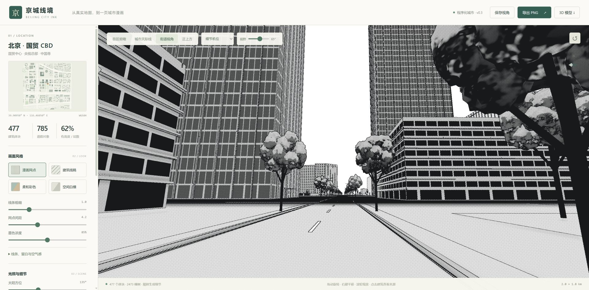
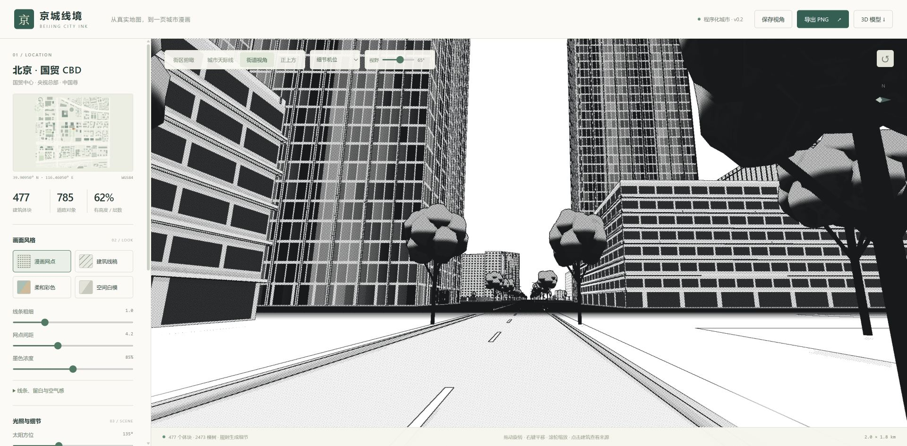
v0.2 优化前v0.3 优化后逐项复评 64.8 → 68.5 / 100
沿用上一轮 R1–R7 权重。0–10 为人工工程评分，不是实景还原百分比；未改进的需求不加分。原版参考来自上一轮同区域截图，未与原版做像素配准。
| 需求 | 权重 | v0.2 | v0.3 | 本次证据判断与剩余差距 |
|---|---|---|---|---|
| R1 · 地标形体 | 20% | 7 | 7 | 中国尊和央视的轮廓、总高保持原规则。央视斜网格恢复清晰，但形体比例没有新增实测依据，不加分。 |
| R2 · 立面类型 | 20% | 6.5 | 6.5 | 近窗和远景层次更清楚，但普通建筑家族、店铺与住宅细节没有扩充，仍有重复感。 |
| R3 · 实体细节 | 10% | 6 | 6 | 屋顶与近景窗台保留；本轮没有扩充屋顶形状库或设备种类，不加分。 |
| R4 · 道路与街道 | 15% | 6.5 | 7 | 03/04/06/11：路面拼接连续、标线避让交口和横道，路缘不再伸入相接车道。桥梁仍缺少桥墩与可靠高差，停止线属于规则推断。 |
| R5 · 树冠与植被 | 10% | 5.5 | 6.5 | 03/04/11：更不规则的叶簇边缘、叶片明暗和近景线稿纹理，彩色不再重复乘绿。仍能看出实体叶团，远近层级会跳变，树种丰富度有限。 |
| R6 · 漫画渲染 | 20% | 6 | 7 | 01/02/07/08/09：亚像素窗格噪点减少，近窗、央视结构线和白色标线得到保留，光照与材质分开。代价是远景主动简化；部分竖肋仍有碎线，明暗设计与原版仍有差距。 |
| R7 · 复现与真实性 | 5% | 9 | 9 | 11组固定机位、1920×945画幅和共有参数全部一致；新增远景窗格参数保存/重载验证通过。原版仍只有同地段参考，无精确外参或多设备性能基准。 |
改的是引擎能力
窗格过滤与光照适用于全部建筑，树冠规则适用于全部树木，道路裁剪与标线避让适用于整份路网。没有按截图或机位修改画面，也没有在此次渲染代码中新增国贸坐标判断。唯一的地标专属调整是央视既有斜网格材质的结构尺度；它与细窗分开过滤，形体仍沿用已有参数化地标规则。
原版参考仍显示的差距
原版近树有更细密的叶缘与疏密关系，建筑家族、窗台、空调和店铺信息也更丰富。本轮没有新增建筑实测信息、卫星图片或新的地标生成器。

验收与开销
- 32项自动测试通过，生产构建通过；最后白模修正另复跑3项渲染测试。Three.js分包仍有超过500kB的体积提示。
- 11组v0.2/v0.3截图，共22张；统一在同一浏览器页重拍，机位、画幅与全部共有参数匹配。旧验收文件未覆盖。
- 漫画、线稿、彩色、白模均实际查看；修复标线留白误分类和白模中实例颜色残留。
- 远景窗格滑杆设为100%，保存视角后重载，实际控件值与输出仍为100%；默认正式截图使用50%。
- 实际导出2400×1295 PNG，已打开检查并确认OSM署名；本轮未重新验收GLB导入。
- 国贸58,209对候选路面精确重叠检查通过；85处OSM横道避让区、13条推断停止线；路面与标线合计48,669三角形。
- 详细树冠限制为相机周围95米内、最多96棵。默认街景整组树木几何约86.0万→104.3万三角形/场景遍次；俯瞰54.4万→51.4万。不含视锥裁剪、阴影和后处理，不是FPS测量。
- 漫画模式新增一次中性光照渲染；其他模式跳过此遍次。当前未做多设备GPU帧率验证。
远处窗格会被主动简化；细节滑杆可调整取舍。树冠仍是实体叶簇，切换层级时仍可能发生跳变。桥梁支撑、地形、更多建筑语法尚未补齐。新增光照通道和叶片纹理有渲染成本，本次没有多设备 GPU 帧率基准。
完整几何预算 · 评分记录 · 线稿模式 · 白模模式 · 新增参数 · 高分辨率 PNG 导出


全部新版截图
街道 · 漫画
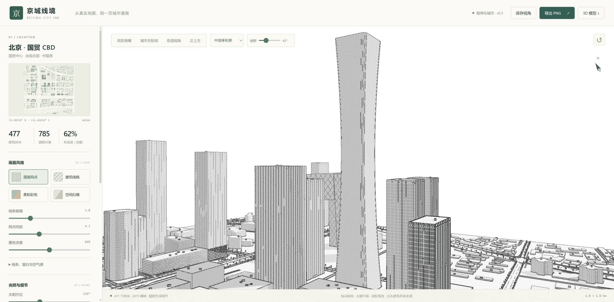
中国尊 · 远窗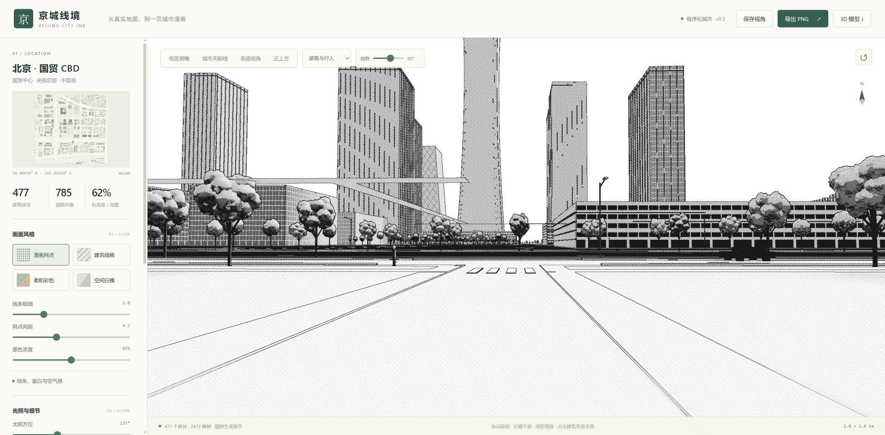
路口 · 标线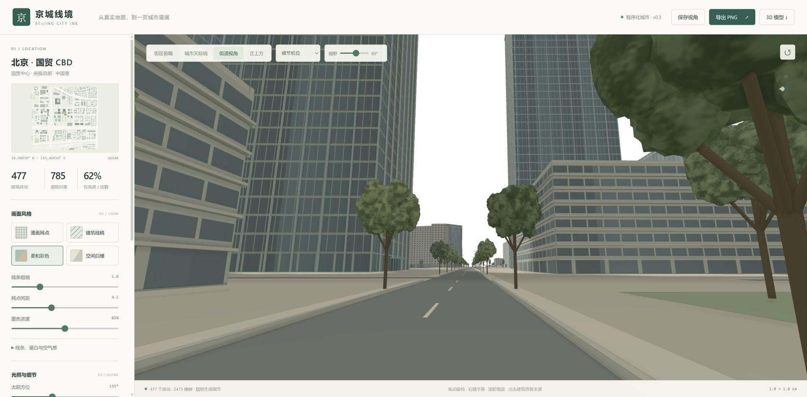
街道 · 彩色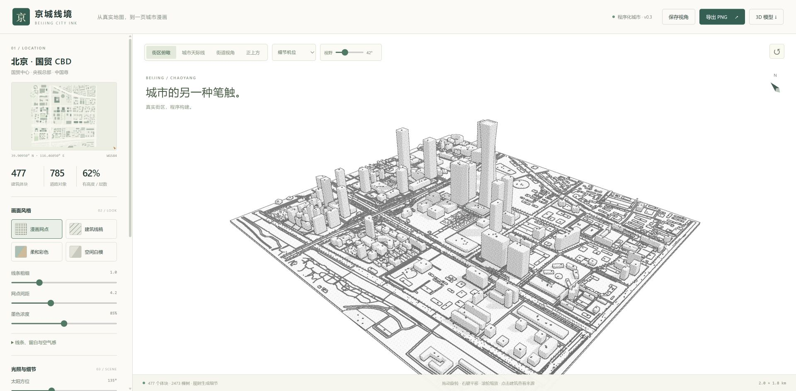
俯瞰 · 漫画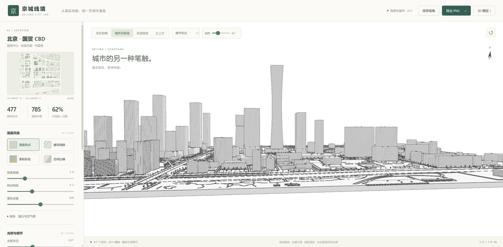
天际线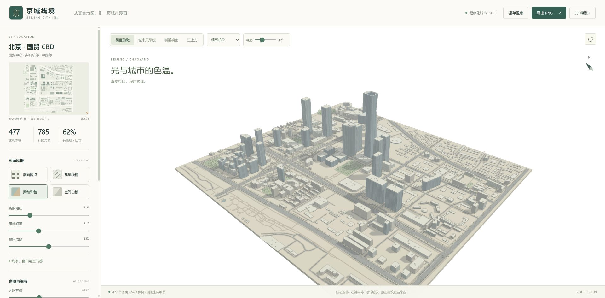
俯瞰 · 彩色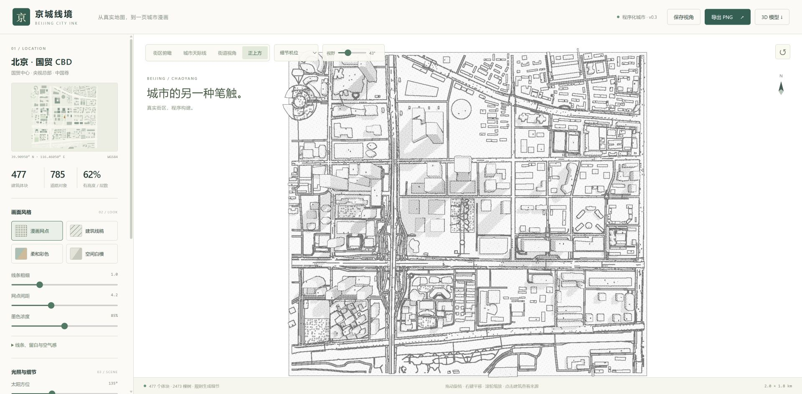
正上方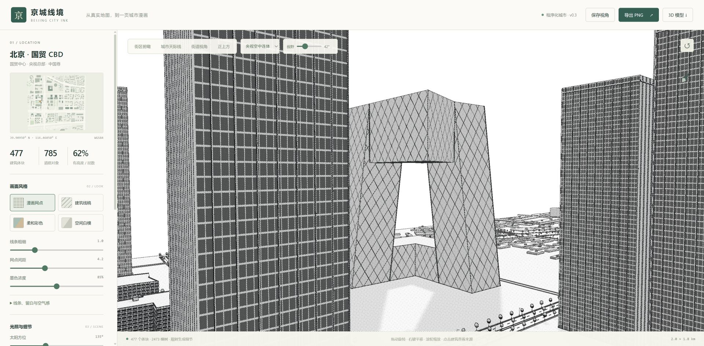
央视总部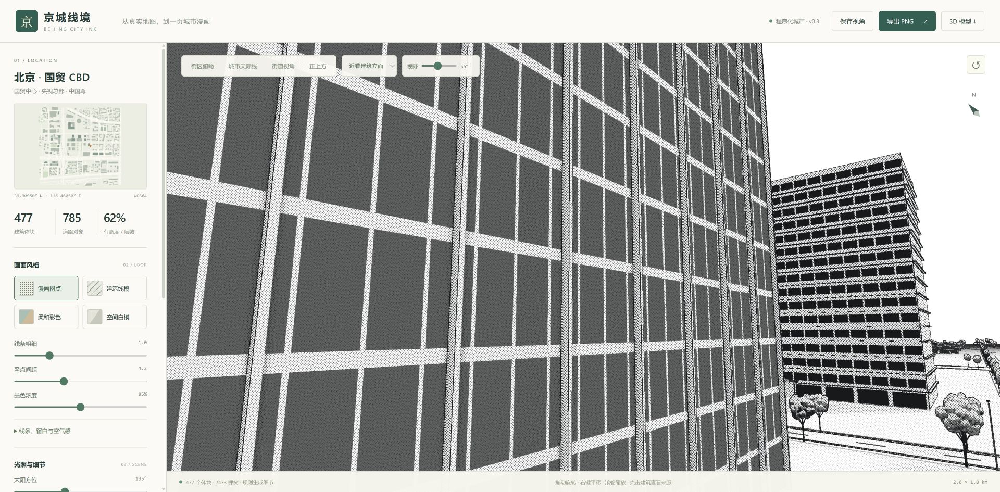
近看立面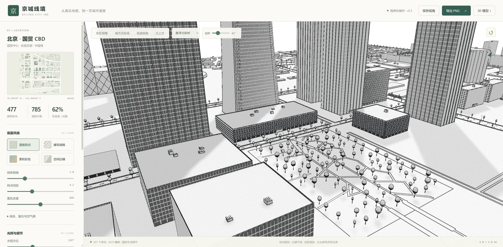
屋顶与街树本轮 Git 提交记录
67a3855docs: define v0.3 rendering polish acceptance criteriaddfe1c4feat(render): filter distant panes and isolate comic illumination5281e69feat(trees): add bounded organic crowns and filtered leaf shading6aa3990fix(trees): preserve instance colors and add near leaf linework315c65bR10: join road surfaces and clip junction markings40b6cc8feat(roads): integrate joined surfaces and clear kerbs from junctions0dcc89ffeat(ui): expose distant facade detail control in saved viewsf28814dperf(trees): bound detailed crowns by three-dimensional view distance83f5016fix(ink): preserve white traffic paint and consecutive object boundaries420e2e0fix(facades): retain landmark diagrid independently of window LODb8adb00fix(ink): avoid density quantization patches on flat surfaces2366500fix(ink): tolerate interpolation around integral material classesb943650fix(render): keep instanced foliage neutral in white model mode